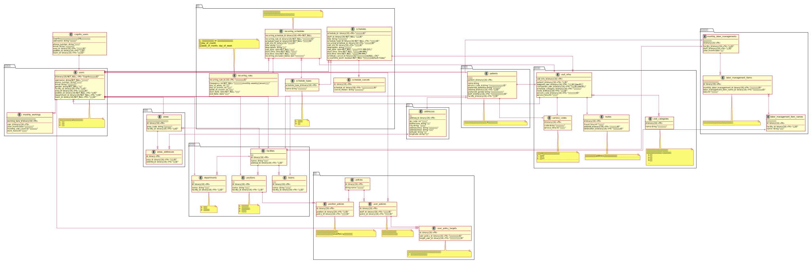

全体
テーブル詳細
スタッフ

予定

患者

権限

施設

住所・エリア
経営情報

認証認可・ユーザー管理
ユーザーは Cognito 側とアプリ側の双方で管理する
認証認可
認証は Cognito で行い、認可は Backen で行う
認可では、ユーザーの権限を確認する
権限情報
認証
ユーザーの認証は Cognito を利用
受け取った Token をクライアントで保存する
ユーザーが権限付きの API を発行する場合、Cognito 側で Token の検証を行う。
→ 成功した場合 Backend 側で認可処理を行う

認可
リクエストからユーザー情報を受け取り、ユーザーの権限を確認して実行可否を判定する

新規ユーザー登録
- クライアントから必要なデータを受け取る
- CognitoUser を登録する
- 登録した User を取得して Sub（UUID）を取得
- UUID + 登録した UserId を元にアプリ DB に登録

権限情報
PBAC（ポリシーベースアクセスコントロール）を採用する
- n 個のポリシーが存在する
- 各ユーザーは複数のポリシーを持っており、ポリシーに応じて実行できる API を制御する
新規登録時
- 役職に応じて、それぞれが権限を持つようにする 新規登録時は、スタッフの役職に応じて権限が割り振られるようにする
ユーザー管理
DB が消えたとしても、Cognito に存在するユーザーは消えない。
そのため、Cognito に登録されたユーザー情報を元に DB に復元する処理が必要となる